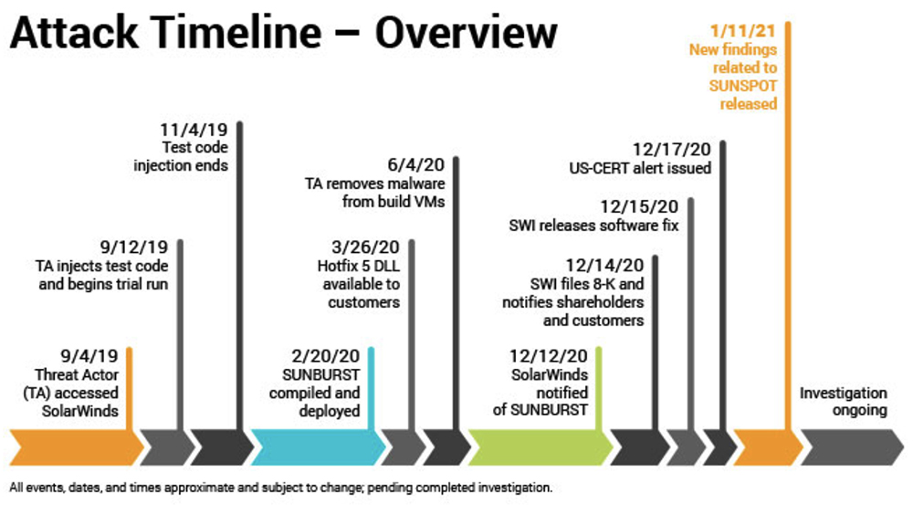

On Friday, December 11, 2020, during an unrelated network security break investigation by cybersecurity firm FireEye, it was discovered that a certain IT management software had been compromised, and was actively being used by attackers. It was unknown how extensive the damage was without further investigation. FireEye immediately informed Kevin Thompson, CEO of SolarWinds, the company that provided the IT management software, of the breach. What ensued next was panic as huge corporations and even government agencies that utilized this software discovered that they could have been exploited by this attack. One question, however, still remained: how long have these attackers had access to these systems?
SolarWinds is a networking software company that has nothing to do with solar energy, as the name might suggest. They create products to help other companies manage their information technology (IT) portfolios. They provide tools to allow companies to monitor everything across their entire technology stack, ensuring that systems are secured when millions, if not billions of dollars, are on the line. This kind of in depth data on customers is what makes a company like SolarWinds so enticing to attackers: if they can get it, they get a lot of data for their troubles.
Their flagship product known as the Orion Platform is widely used around the world. It allows customers to control every part of their IT stack, which means it has its hands in every part of their customer’s data and systems. With Orion, companies can monitor network performance, server and application performance, manage network configurations, handle logs and more. While SolarWinds as the company doesn’t actually handle any of that data themselves, they provide customers with the tools to handle it themselves. And if those tools are compromised, then every customer utilizing the bad software is compromised as well.

The hack originally occurred back in September 2019, according to a SolarWinds blog. The thread actors were able to gain access somehow to SolarWinds’ systems, and then begin working on their exploit. They first injected test code on SolarWinds’ virtual machines, testing their exploit to see how it would work, and how they could improve it. The attackers knew that they only had one chance to get it right, and if they didn’t then they could be discovered easily. After a few months of testing, the attackers removed all traces of internal testing on SolarWinds’ systems, and then put their official exploit code in an upcoming Hotfix 5 DLL update to the Orion software. This update was pushed to customers in February 2020, and that’s when the hacks began. It’s important to note that only customers that actually updated their Orion Platform to the new version were vulnerable to the exploit. The threat actors were able to remain undetected all the way to June 2020 when they removed the malicious code, named SUNBURST, from the SolarWinds’ systems. During those few months, it is still unknown the extent of which the hackers were able to access customer data.
As of February 2021, the US government believed about 9 federal agencies and 100 private companies were compromised in the breach. What’s more, it was estimated that up to 18,000 SolarWinds customers were thought to have originally received the malicious code, and they very well could have been exploited. Government agencies a part of the hack include the Department of Treasury, the Department of Homeland Security, Department of State, and the Department of Commerce. Obviously, with these being government agencies that deal with highly sensitive and confidential data, it is unknown to the public what information was stolen.
We still can’t say today with any level of certainty who was responsible for the attack, as the bad actors were never caught. Federal investigations and other research conducted by private cybersecurity firms have pointed to a Russian espionage operation conducted by Russia’s Foreign Intelligence Service. Many have accepted this belief as well due to the increase in tensions over technological attacks between the United States and Russia. Russia of course has denied any involvement in the attack.
Once the attack was discovered, SolarWinds was very quick to issue an update to their customers, encouraging them to update their software platforms. However, at this point, the attackers had already finished their exploit of the systems and had moved on elsewhere. This attack was a devastating blow to SolarWinds, however also to the tech community as a whole. This kind of attack, known as a “supply chain attack”, is not a new concept, and this hack shows the dangers that it can present when properly executed by a threat actor with the right tools and the right knowledge. A question we have to ask ourselves, in lieu of this attack, is how many more attacks like this have occurred and are yet to be discovered? If this attack can go unnoticed for months and wreak the kind of havoc that it did, then who’s to say that it hasn’t been done elsewhere?
It also raises an interesting point about the regulation and governance around third-party software and the chain of responsibility when being utilized. This hack demonstrates how hacking one piece of software can give you access to thousands of different companies’ data stores. Obviously, these companies have contracts signed regarding the use of the technology, but should customers of these software companies be given more control over the policies in place at these software vendors? Further investigation into this attack will only shed more light on the issues of data privacy. It is important for other companies in this ecosystem to see what has been learned and utilize that knowledge in their own processes in the future.